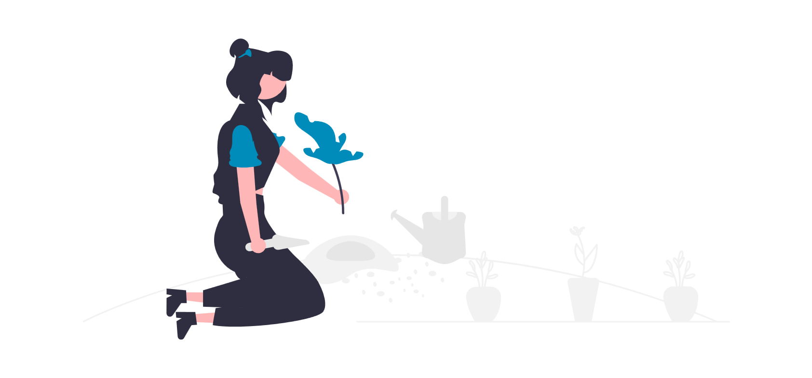

Daten aufbereiten
Ich habe Daten – was jetzt?
Beispiel: “Warum sich immer mehr Menschen krankmelden”
von Sophie Menner, Julia Barthel, Kirsten Girschick, Josef Schön
{kind=link}
Hintergrund:
- Grundlage für diese Recherche war die Idee, den Eindruck “irgendwie sind immer mehr Menschen öfter krank, vor allem mit Husten und Schnupfen” näher zu beleuchten. Dafür haben wir Krankenkassen angefragt, ob sie uns Zahlen zu Krankschreibungen (“Arbeitsunfähigkeitsmeldungen”) geben können. Die haben wir schließlich vom BKK-Dachverband bekommen – aufgeschlüsselt nach Geschlecht, Beruf, Landkreis und Krankheitsgruppe (ICD-10-Code).
- Diese Daten haben wir ausgewertet und sehr, sehr viele Arbeitsgrafiken erstellt, um einen Überblick zu bekommen, was relevant sein könnte. Damit haben wir vorsortiert und dann redaktionell die wichtigsten Thesen herausgearbeitet.
Was wir daraus lernen können:
- Gleiche Datengrundlage und Recherche, unterschiedliche Texte, jeweils auf eine andere Zielgruppe zugeschnitten.
- Die Struktur des Textes hängt auch von der (vermuteten) Erwartungshaltung des Publikums ab.
- Das Visualisierungstool beeinflusst auch die Auswahl der Grafiken.
Übung: Musik – US-Charts
Seit 1958 veröffentlicht das US-Magazin “Billboard” jeden Dienstag die “beliebtesten” Songs – basierend auf Verkäufen, Airplay und Streaming der jeweiligen Erfassungswoche. Alle Top-Titel hat Chris Dalla Riva für seinen Blog und sein Buch zusammengetragen und freundlicherweise als Google-Tabelle veröffentlicht: Billboard Hot 100 Number Ones Database.
→ Welche Geschichten lassen sich darin finden?
Mögliche Fragen
- Wie viele männliche und weibliche Akteur*innen gibt es: Artists, Songwriter, Producer? → gruppieren nach Spalte
Artist Male(Y) und zählen - Was der Zusammenhang zwischen der Dauer auf Platz 1 und dem
Overall Rating? → Spalten D und I, visuell auswerten: Scatter Plot mit Dauer auf x- und Overall Rating auf y-Achse - Spiegeln sich globale Ereignisse im Happiness-Score der Charts wieder? → Spalte AT + Datum visuell vergleichen: Punkte auf x-Achste + eingezeichnete historische Ereignisse
- Hatte der Vietnamkrieg andere BPM als die 2000er? → Spalte AQ visuell mit vorher recherchierten und festgelegten Zeitspannen abgleichen: BPM und Zeitspannen, Verlauf in Kurven, ggf. berechnen, indem man für die jeweiligen Zeiten das Integral der Kurven ausrechnet?
- Wie haben sich Songs hinsichtlich Dancability verändert über die Zeit? → Spalten AS und C visuell vergleichen: Scatterplot, x-Achse mit der Zeit, y-Achse Dancability; historische Ereignisse ergänzen
- Im Laufe der Jahre, wie oft sind die Songwriter auch die Artists – gibt es mehr oder weniger Ghostwriter? → Spalten AF und AG, gruppieren nach Jahr, dann nach Songwriter-Spalte, die dann zählen
- Über was wird gesungen? Welche Schlagwörter kommen wann häufiger vor? (z.B. dad vs father) → Spalten CK und CL, pro Jahr nach Wörtern gruppieren (Häufigkeit jedes Worts) und zählen, dann alle “und”-bla-Wörter rausstreichen und dann gucken, was am häufigsten vorkommt und spannend ist
- Welchen Zusammenhang gibt es zwischen Dancability und Happiness? → Spalten AS und AT im Scatterplot visuell vergleichen
- Von welchem (Parent-)Label kommen die meisten Hits und hat sich das über die Zeit verändert? → Spalten K, L und C, gruppieren nach Jahr und Label und ggf. kleine Labels zusammenfassen
- Von welchem (Parent-)Label kommen die Hits mit der meisten Dauer auf Platz 1 und hat sich das über die Zeit verändert? → Spalten K, L, D und C, gruppieren und über die Zeit anschauen
- Sind die Hits heutzutage für Filme komponiert oder gab es sie bei der Filmproduktion schon und sie wurden gezielt ausgewählt? → Spalten CS und CT, neue (Pivot-)Tabelle erstellen: Jahr der Veröffentlichung, nach CS / CT, gruppieren + zählen
- … wie oben, aber für Fernsehshows: komponiert oder ausgewählt? → Spalten CU und CV gruppieren und zählen
- Wie werden die Hits durch Streaming beeinflusst in Bezug auf Länge, BPM etc.? → zusätzliche Daten zum Streaming nötig
- In welchem Jahrzehnt gab es die meiste explizite Sprache? → Spalten CO und C; extra Spalte mit Jahrzehnt anlegen, darauf gruppieren + zählen
Ein Beispiel für eine Musik-Geschichte:
- The Pudding, “Love Songs, RIP”
Übung: Wein
Der brasilianische Informatik-Professor Rogério Xavier de Azambuja hat 2022 einen großen Datensatz erstellt mit Weinen und “Metadaten”, z.B. wie gern die Weine getrunken werden, woher sie kommen oder zu welchen Gerichten sie passen. Dieser Datensatz ist auf GitHub (kleinere Test-Version mit 100 Einträgen) oder in einem Google-Drive verfügbar. Zum Einstieg eignet sich diese csv-Datei.
→ Was verraten uns die Daten über die Welt der Weine – und welcher wurde am besten bewertet?
{kind=link}
Mögliche Fragen
- In welchen Ländern werden welche Rebsorten besonders viel angebaut? → Spalten E und K, gruppieren, zählen und sortieren nach höchster Anzahl
- Gibt es einen Zusammenhang zwischen Region und Acidity (Säuregehalt)? → Spalten M und I auf interaktiver Karte darstellen, dazu nach Region gruppieren und Acidity auswerten
- Gibt es einen Zusammenhang zwischen Region und ABV (Alkoholgehalt)? → Spalten M und G, könnte man ebenfalls auf interaktiver Karte darstellen; dazu nach Region gruppieren und Alkoholgehalt auswerten
- Gibt es einen Zusammenhang zwischen Alkoholgehalt und Geschmack (Body)? → Spalten G und H
- Gibt es einen Zusammenhang zwischen den Grapes und dem Essen, mit dem es harmonized? → Spalten E und F
- Welcher “Type” ist am beliebtesten / kommt am häufigsten vor? → Spalte C gruppieren und zählen
- Welche Sorte hat die ältesten Jahrgänge? Welche die neuesten? Welche meisten? Welche die wenigsten?
- Wie unterscheidet sich der durchschnittliche Alkoholgehalt je nach passendem Gericht? (Bei welchem Gericht ist es am wahrscheinlichsten, dass man hinterher mehr betrunken ist?)
Übung: Stadtbaumkampagne Berlin
In Berlin werden im Rahmen der Stadtbaumkampgne jährlich Spenden gesammelt, um neue Bäume zu pflanzen. Mitte März bis Mitte April wurden bereits viele Bäume gepflanzt, die Senatsverwaltung für Mobilität, Verkehr, Klimaschutz und Umwelt veröffentlicht hier die Baumlisten.
→ Welche Geschichten verstecken sich in den Listen?

Mögliche Fragen
- Was wird wo gepflanzt? → Baumarten zusammenfassen nach Straßen
- Was wurde am meisten neu gepflanzt? Allgemein und nach Stadtteilen → Baumarten (+ Stadtteile gruppieren und zählen)
- Welcher Stadtteil hat am meisten Diversität an Pflanzen? → zuerst Diversität definieren, z.B. prozentualer Anteil
- Wie viel Durchmischung gibt es pro Straße? → ähnlich wie “Diversität”
- Wo / in welcher Straße wird nur eine Baumart gepflanzt? → prozentualer Anteil = 100%
- Welche Bäume sind da schon – erhöht man die Diversität mit der Neupflanzung? (braucht zusätzliche Daten, welche Bäume schon vorhanden sind)
- Wie dicht ist die Neubepflanzung? → nach Hausnummer-Abständen berechnen, aber eher unvollständig
Wo kann man nach Daten stöbern?
{kind=link}
- “Data Is Plural”, leider eingestellter Podcast + Newsletter, Archiv
- GitHub, z.B. Suche nach “awesome dataset”
- TidyTuesday, wöchentliche Challenge, die sich vor allem auf R bezieht
- kaggle as as very popular platform for data science (but I don’t like it, to me it seems often a bit… contextless?)
- Our World in Data
- international / Ländervergleich: generell UN-Daten